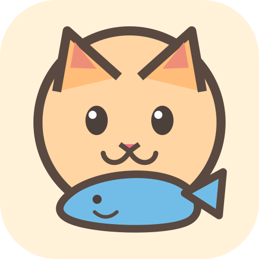
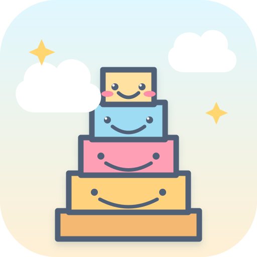

루프 군단TIME LOOP ACTION
→이전 실험 보관함
핵심 재미 검증에서 보류된 10개 프로토타입입니다. 링크는 그대로 플레이할 수 있어요.

냥도둑STEALTH
→햄찌 창고CATCH & SAVE
→
몽실빵 탑STACK
→
유령 세탁소RUB & CLEAN
→
별사탕 항해단DRAW PUZZLE
→
달콩 찻집MEMORY
→
숨콩BREATHING TOOL
→
냉큼냉장고FOOD TRACKER
→
마음날씨MOOD LOG
→